Abstract
Objective: Multiple Sclerosis (MS) is a neurological condition which widely affects people 50-60 years of age. While clinical presentations of MS are highly heterogeneous, mobility limitations are one of the most frequent symptoms. This study examines a machine learning (ML) framework for identifying MS through spatiotemporal and kinetic gait features. Methods: In this study, gait data during self-paced walking on an instrumented treadmill from 20 persons with MS and 20 age, weight, height, and gender-matched healthy older adults (HOA) were obtained. We explored two strategies to normalize data and minimize dependence on subject demographics; size-normalization (standard body size-based normalization) and regress-normalization (regression-based normalization using scaling factors derived by regressing gait features on multiple subject demographics); and proposed an ML based methodology to classify individual strides of older persons with MS (PwMS) from healthy controls. We generalized both across different walking tasks and subjects. Results: We observed that regress-normalization improved the accuracy of identifying pathological gait using ML when compared to size-normalization. When generalizing from comfortable walking to walking while talking, gradient boosting machine achieved the optimal subject classification accuracy and AUC of 94.3% and 1.0, respectively and for subject generalization, a multilayer perceptron resulted in the best accuracy and AUC of 80% and 0.86, respectively, both with regression-normalized data. Conclusion: The integration of gait data and ML may provide a viable patient-centric approach to aid clinicians in monitoring MS. Significance: The results of this study have future implications for the way regression normalized gait features may be clinically used to design ML-based disease prediction strategies and monitor disease progression in PwMS.
Core contributions
- 1Gait-based MS screeningA machine-learning pipeline (GML4MS) that classifies single strides of older adults with MS from healthy controls, using 21 spatiotemporal and kinetic features from an instrumented treadmill.
- 2Regression-based normalizationGait features are normalized with regression models fit on a separate group of 30 healthy older adults, removing the effect of age, weight, height and gender and improving accuracy over standard body-size scaling.
- 3Tested on new tasks and new peopleModels are trained on normal walking and tested on walking while talking, and separately tested on people they have never seen.
- 4Nine classifiers comparedDecision trees, random forests, support vector machines, boosting methods, logistic regression and a multilayer perceptron, evaluated in both settings with both normalizations.
- 5Which features matterAblations, conditional entropy and feature-domain tests show stride speed, stride length and toe-off forces are the most informative, and that features a wearable could measure come close to the full set.
- 6MS progression spaceUnsupervised clustering of gait features reveals three subgroups of people with MS that line up with clinical disability (EDSS), and the code is open source.
Method
1Study design
We recruited 20 people with MS (mild to moderate disability, EDSS 1–6) and 20 matched healthy older adults. Each person walked at their own pace on an instrumented treadmill with a built-in force plate for up to 75 seconds, both normally (W) and while reciting alternate letters of the alphabet (WT), a dual task that mimics everyday distractions. The treadmill recorded gait events, ground reaction forces and the centre of pressure at 500 Hz. After excluding five people who held the handrails, 35 people remained (18 healthy, 17 with MS).
2Gait features
We split each walk into strides and extracted 21 features per stride: 7 temporal (such as stride, stance, swing and double-support times, and cadence), 4 spatial (stride length, stride width and foot progression angles), 2 spatiotemporal (stride speed and walk ratio) and 8 kinetic (forces at six gait events, plus two features from the butterfly diagram of the centre of pressure). In all, we kept 1,654 strides from normal walking and 1,576 from walking while talking.
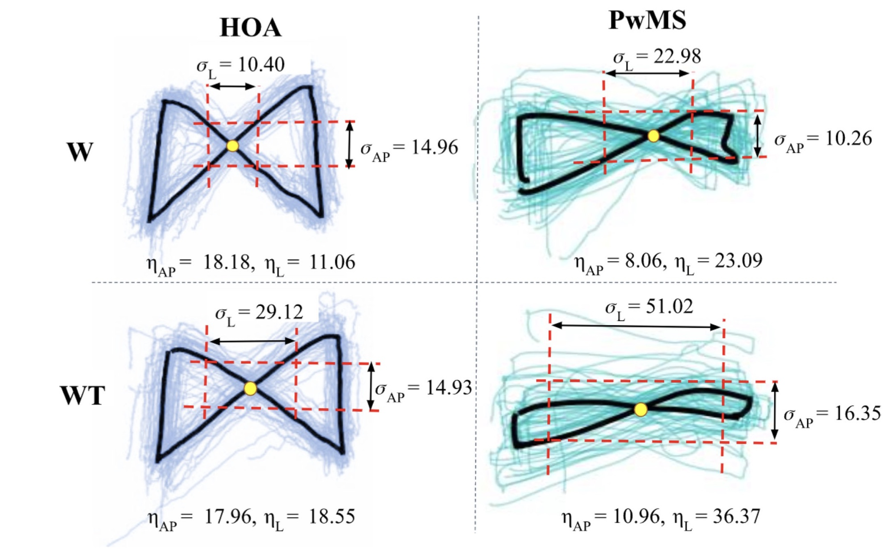
3Normalizing away body size and demographics
Taller or heavier people naturally walk differently, which can hide disease-related changes. We compared two fixes: size-N, which scales each feature by body size (for example, stride length by height), and regress-N, which predicts each feature from age, weight, height and gender using regression models fit on a separate group of 30 healthy older adults (3,923 strides), then scales by that prediction.
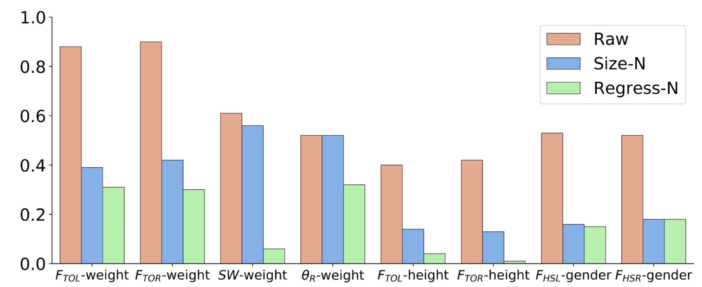
4Prediction models
We trained nine classifiers (decision tree, random forest, linear and RBF support vector machines, gradient boosting, AdaBoost, XGBoost, multilayer perceptron and logistic regression) to label each stride as healthy or MS, in two settings:
- Task generalization: train on normal walking, test on walking while talking.
- Subject generalization: test on people the model has never seen (7-fold cross-validation).
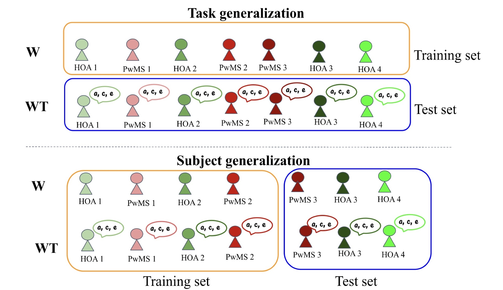
We classify each stride, then a majority vote over a person’s strides gives their prediction. Every model was run on both size-N and regress-N features.
Results
1How MS changes gait
People with MS had longer and more variable stride, stance and double-support times and shorter single support. They walked with shorter strides, lower cadence and slower speed, a wider stance, and larger side-to-side shifts in the butterfly diagram. No single feature separated the groups cleanly, which motivates machine learning.
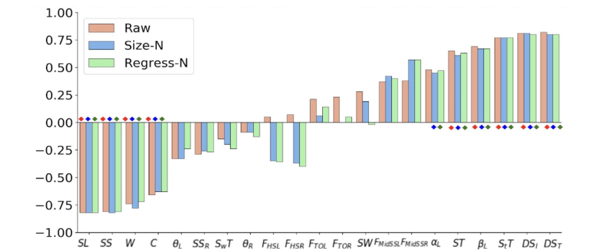
2Predicting MS
- Regression-based normalization helps: almost every classifier did better with regress-N features than with size-N.
- A new walking task was handled well: gradient boosting classified 94.3% of people correctly (AUC 1.0) on walking while talking; only two people with MS were missed.
- New people are harder: the best model, a multilayer perceptron, reached 80% accuracy (AUC 0.86) on people it had never seen.
- Voting across a person’s strides beats single strides, for example from 79.2% to 94.3% for a random forest.
Best model in each setting, at the level of individual people (healthy vs. MS), with regress-N features:
| Setting | Best model | Accuracy | AUC |
|---|---|---|---|
| Task generalizationtrain on walking, test on walking while talking | Gradient boosting machine | 94.3% | 1.00 |
| Subject generalizationnew people | Multilayer perceptron | 80% | 0.86 |
Show full results (paper Tables II–III): top five classifiers, stride- and person-level, size-N vs. regress-N
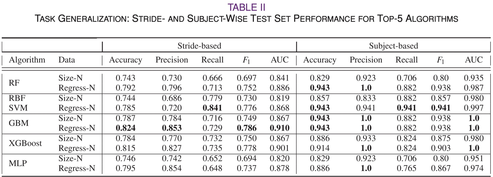
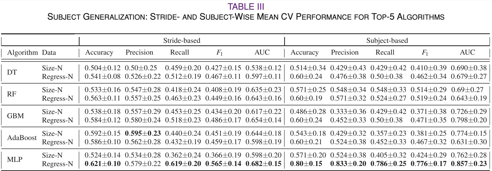
Analysis
1Which features matter?
We retrained the models on subsets of features (spatial, temporal, kinetic and their combinations), measured how much each feature reduces uncertainty about the label (conditional entropy), and tested a set of features that a wearable sensor could capture.
- All 21 features together work best in both settings; no smaller subset matched them.
- Stride speed, stride length and toe-off forces are the most informative, while foot angles and side-to-side deviation are the least.
- Wearable-measurable features come close: they reached an AUC of 0.998 for a new walking task, a promising sign for at-home monitoring.
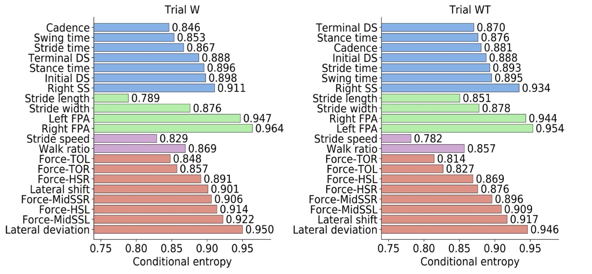
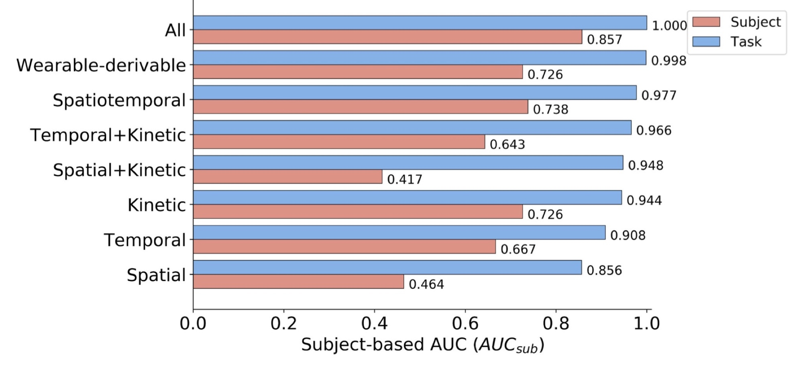
Show the ablation study (paper Table IV)
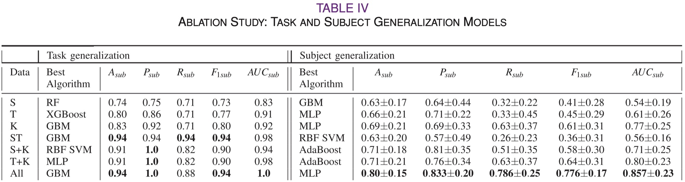
2An MS progression space
We reduced the gait features of people with MS to two dimensions and clustered the strides without using any labels.
- Three subgroups emerge that track disability: one cluster is mostly mild and mild-to-moderate MS, while another contains only moderate MS.
- Speed and force define the space: the two axes are dominated by stride speed and by forces, the same features that best predict MS.
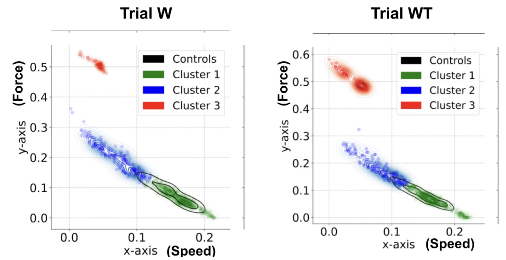
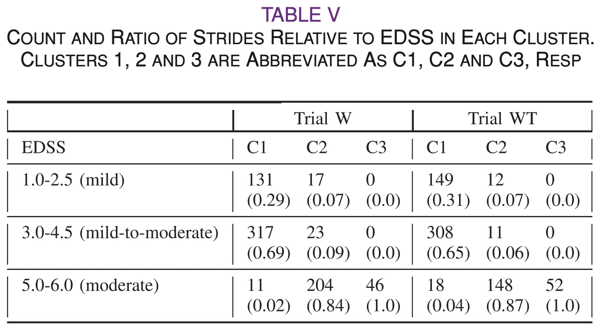
In the news
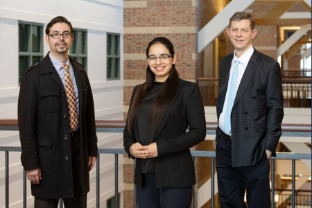
- Machine learning helps spot gait problems in individuals with multiple sclerosisIllinois News Bureau; also Carle Illinois College of Medicine, Tech Briefs, News Medical, EurekAlert!, Neuroscience News, Medical Xpress and Neuro Daily
- Machine learning of walking patterns could help predict MS progressionMultiple Sclerosis News Today
- Machine learning catches multiple sclerosis-related gait issuesTechTarget; also India Next
- Study results from University of Illinois provide new insights into multiple sclerosisHealth & Medicine Week, NewsRx
BibTeX
@article{kaur2021predicting,
title = {Predicting Multiple Sclerosis From Gait Dynamics Using an
Instrumented Treadmill: A Machine Learning Approach},
author = {Kaur, Rachneet and Chen, Zizhang and Motl, Robert and
Hernandez, Manuel E and Sowers, Richard},
journal = {IEEE Transactions on Biomedical Engineering},
volume = {68},
number = {9},
pages = {2666--2677},
year = {2021},
doi = {10.1109/TBME.2020.3048142}
}Acknowledgments
The authors would like to thank Gioella Chaparro and other members of the Mobility and Fall Prevention Research Lab for their assistance with data collection and the participants in this study for their contributions. This work was supported in part by the University of Illinois Center for Wearable Intelligent Technologies SRI.